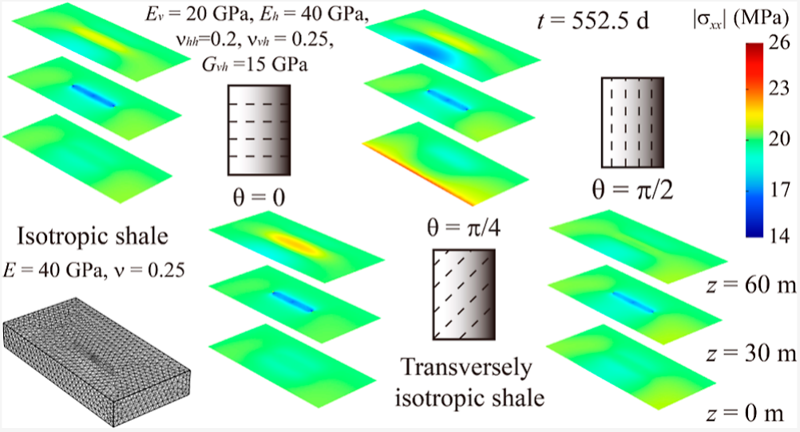

Material Constants of Anisotropic Poroelasticity and Its Impacts on Shale Gas Production
Energy & Fuels, 37(23):18722 - 18734, 2023.
While the production of shale gas is always accompanied by stratum deformation, previous studies have commonly assumed isotropy to simplify the modeling process despite substantial experimental evidence supporting the anisotropy of these formations. This work contributes to both theoretical and practical aspects of anisotropy. For the theoretical aspect, a novel mixture theory approach is used to explore the poromechanical constants of anisotropic poroelasticity. By incorporating new elements in the modeling of intrinsic solid density and unjacketed frame deformation, we are able to establish a complete set of parameters considering micro-inhomogeneity and micro-anisotropy in a macroscopically anisotropic porous medium like shale. The bounds on the material constants are established, and their relationship with the intrinsic material constants of poroelasticity proposed by Cheng (2021) is discussed. In a practical context, we examine the impacts of anisotropy in a 3D shale gas reservoir considering both elastic and permeability anisotropy. For elastic anisotropy, compared with the isotropic counterpart, we identify significant dissimilarities in the horizontal stress parallel to the wellbore ( here) between assumptions of isotropy and transverse isotropy. For permeability anisotropy with an inclined plane of isotropy, the gas production is largely inhibited, and we could observe the stress distribution reorientation. To conclude, isotropic models are unable to reproduce the stress changes predicted by the anisotropic models, and this research contributes to a better understanding of anisotropy in shale gas reservoirs.
